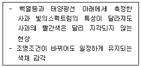
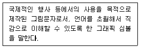
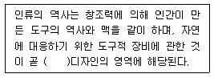

컬러리스트기사 (2007-08-05 기출문제)
1과목: 색채심리 마케팅
1. 다음이 설명하는 것은?

- 기억색
- 항상성
- 주관성
- 착시
(정답률: 알수없음)

2. 분산의 제곱근으로 분산의 특성을 모두 가지고 있을 뿐만 아니라, 관찰값이나 대표값과 동일한 단위로 사용할 수 있어 일반적인 분산도 척도로 널리 사용되고 있는 것은?
- 평균편차
- 중간편차
- 표준편차
- 정량편차
(정답률: 알수없음)
3. 다음 색채조사를 위한 표본추출 방법에서 집락(cluster) 표본 추출을 설명한 것 중 가장 올바른 것은?
- 표본을 선정하기 전에 여러 하위집단으로 분류하고 각 하위집단별로 비례적으로 표본을 선정한다.
- 모집단의 개체를 구획하는 구조를 활용하여 표본추출 대상개체의 집합으로 이용하면 표본추출의 대상명부가 단순해지며 표본추출도 단순해진다.
- 조사결과에 크게 영향을 미치는 변수를 기준으로 하위 모집단을 구분하는 것이 좋다.
- 지역적인 특성에 따른 소비자의 자동차 선호 특성 등을 조사할 때 유리하다.
(정답률: 알수없음)
4. 소비자 행동에 영향을 미치는 내적∙심리적 요인이 아닌 것은?
- 지각
- 학습
- 품질
- 동기
(정답률: 알수없음)
5. 다음 중 제품 특성에 따른 선호색채에 영향을 주는 요인으로 가장 거리가 먼 것은?
- 디자인
- 재료
- 유행
- 가격
(정답률: 알수없음)
6. 세분화된 시장을 선택하여 이에 알맞은 제품을 제공 하는 표적마케팅의 단계는?
- 시장표적화 → 시장세분화 → 시장의 위치 선정
- 시장세분화 → 시장표적화 → 시장의 위치선정
- 시장의 위치선정 → 시장 표적화 → 시장세분화
- 틈새 시장분석 → 시장세분화 → 시장의 위치선정
(정답률: 알수없음)
7. 다음 중 광고 매체 선정시 고려해야 할 사항과 가장 거리가 먼 것은?
- 매체의 특징
- 비용
- 경쟁
- 정보 분석
(정답률: 알수없음)
8. 소비자 시장을 파악하기 위한 인구 통계적인 요인 조사에 해당하지 않는 것은?
- 소비자의 연령∙성별 파이
- 소비자의 감성별 차이
- 소비자의 거주 지역별 차이
- 소비자의 학력∙소득 차이
(정답률: 알수없음)
9. 심리학, 생리학, 조명학, 미학 등에 근거를 두고 과학적으로 색채를 선택하여 사용하는 것과 관련이 없는 것은?
- 실내 환경색은 천장, 벽, 바닥의 순으로 어둡게 하는 것이 안정감이 있다.
- 회사의 홍보 및 광고 효과를 겨냥한 색의 배색으로 한다.
- 색채의 유지, 관리, 보수에 적합한 색채관리가 포함 된다.
- 홍역 환자의 병실에 빨간 헝겊을 드리워 보온을 꾀하는 기능적 색의 사용법이 있다.
(정답률: 알수없음)
10. 다음 선호색에 대한 일반적 경향을 설명한 내용 중 잘못된 것은?
- 자동차 선호색은 각 지역의 자연환경, 온도 및 습도, 생활패턴 등에 따라 차이가 있다.
- 한국의 경우 대형차는 어두운 색을, 소형차는 경쾌한 색을 선호하는 경향이 있다.
- 동일한 제품이라도 여성용 제품에서는 파스텔 톤의 밝은 색채가 주로 사용된다.
- 제품의 특성에 따라 선호되는 색채는 유행에 따라서 변화되지 않는다.
(정답률: 알수없음)
11. 마케팅 전략의 접근법에 해당하지 않는 것은?
- 직감적 전략
- 분석적 전략
- 통합적 전략
- 유동적 전략
(정답률: 알수없음)
12. 21세기를 대표하는 것은 디지털이다. 디지털을 상징하는 대표색은?
- 노랑
- 빨강
- 청색
- 자주
(정답률: 알수없음)
13. 우리나라 청자의 상징색을 색이름으로 바르게 나타낸 것은?
- 비색(翡色)
- 취색(翠色)
- 자색(紫色)
- 청색(靑色)
(정답률: 알수없음)
14. 회색의 배경색 위에 검은색 선의 형태를 그리면 배경색의 회색은 거무스름하게 보이고, 회색의 배경색 위에 백색선의 형태를 그리면 배경색은 밝게 보이는 것은?
- 솔젠 효과
- 비렌 효과
- 베졸드 효과
- 피스터 효과
(정답률: 알수없음)
15. 국가별, 문화별로 색채 선호 및 상징은 다르게 나타난다. 다음 중 색채에 대한 문화별 차이를 설명한 사례로 적절하지 않은 것은?
- 서양의 흰색 웨딩 드레스 / 한국의 소복
- 중국의 붉은 명절 장식 / 서양의 붉은 십자가
- 미국의 청바지 / 카톨릭의 성화 속 성모마리아의 청색 망토
- 프랑스 황제궁의 황금 대문 / 중국 황제의 황색 옷
(정답률: 알수없음)
16. 파버 비렌 연구에 따른 색채와 형태의 연상에서 바르게 연결된 것은?
- 보라색 - 타원형
- 녹색 - 삼각형
- 주황 - 정사각형
- 노란색 - 육각형
(정답률: 알수없음)
17. 다음 기업색채의 선택 요건 중 부적당한 것은?
- 여러 가지 소재로 재연이 용이하고 관리하기 쉬운 색채요건
- 눈에 띄기 쉽고 타사와의 차별성이 뛰어난 색채요건
- 기업의 독특한 이미지를 살리기 위한 복잡하고 개성적인 색채요건
- 기업의 이념과 실체에 맞는 이상적 이미지를 나타내는 색채요건
(정답률: 알수없음)
18. 환경 색채를 적용한 사례 중 가장 적절한 것은?
- 연한 색을 주조색으로 한 동일∙유사 배색은 편안한 느낌을 주므로 병원, 양로원 등에 적합하다.
- 다양한 원색을 많이 사용하여 화려한 느낌을 연출한 매장은 고급스러운 실버용품점에 적합하다.
- 회색을 주조색으로 하고, 파랑색, 검정 등을 보조색으로 한 어린이 집은 집중력을 향상시킨다.
- 연한 색을 주조색으로 한 동일∙유사 배색은 활기찬 느낌을 주므로 스포츠클럽, 레저활동 장소에 적합하다.
(정답률: 알수없음)
19. 현대광고의 한 유형으로 광고 캠페인 전개 초기에 소비자의 호기심을 불러 일으키기 위해 메시지 내용을 처음부터 전부 보여주지 않고 조금씩 단계별로 내용을 노출시키는 광고는?
- 팁온 광고
- 티저광고
- 패러디 광고
- 블록 광고
(정답률: 알수없음)
20. 색채 시장조사의 자료수집 방법 중 관찰법에 대한설명으로 옳지 않은 것은?
- 조사의 신뢰도를 높이기 위해 소비자의 행동을 직접적으로 관찰하는 방법이다.
- 특정 지역의 유동인구를 분석하거나, 시청률이나 시간, 집중도 등을 조사하는데 적절하다.
- 특정효과를 얻거나 비교를 통한 정확한 정보를 얻고자 할 때 사용하는 방법이다.
- 특정 색채의 기호도를 조사하는데 적절하다.
(정답률: 알수없음)
2과목: 색채디자인
21. 다음은 무엇에 대한 설명인가?

- 다이어그램(diagram)
- 로고타입(logotype)
- 레터링(lettering)
- 픽토그램(pictogram)
(정답률: 알수없음)
22. 제품수명주기의 단계를 바르게 나열한 것은?
- 도입기 - 성숙기 - 확산기 - 쇠퇴기
- 도입기 - 성장기 - 성숙기 - 쇠퇴기
- 수용기 - 도입기 - 성숙기 - 쇠퇴기
- 수용기 - 성숙기 - 확산기 - 쇠퇴기
(정답률: 알수없음)
23. 기존 제품의 재료나 기능 또는 형태를 개량하고 개선하는 것은?
- 리디자인(re-design)
- 트랜드 디자인(trend design)
- 이미지 디자인(image design)
- 혁신 디자인(advanced design)
(정답률: 알수없음)
24. 환경 디자인의 영역에 속하지 않는 것은?
- 도시계획
- 건축디자인
- 인테리어 디자인
- 운송수단 디자인
(정답률: 알수없음)
25. 디스플레이 디자인(Display Desgin)에 대한 설명 중 잘못된 것은?
- 물건을 공간에 배치, 구성, 연출하여 사람의 시선을 유도하는 강력한 이미지 표현이다.
- 디스플레이의 구성요소는 상품, 고객, 장소, 시간이다.
- P.O.P(Point of Purchase)는 비상업적 디스플레이에 활용된다.
- 시각전달 수단으로서의 디스플레이는 사람, 물체, 환경을 상호연결 시킨다.
(정답률: 알수없음)
26. 바우하우스에서 사진과 영화예술을 새로운 시각예술로 발전시킨 사람은?
- 발터 그로피우스
- 모홀리 나기
- 한네스 마이어
- 마르셀 브로이어
(정답률: 알수없음)
27. 다음의 디자인 사조들이 대표적으로 사용하였던 색채의 경향이 잘못 설명된 것은?
- 팝아트는 복제성과 보편성을 강조하기 위하여 전체적으로 어두운 색조에 혼란한 강조색을 사용한다.
- 옵아트는 색의 원근감, 진출감을 흑과 백 또는 단일 색조를 강조하여 사용한다.
- 아르누보는 큐비즘의 영향을 받아, 차분하고 자연적인 색채를 사용하며, 공간적이고 입체적인 색채의 효과를 강조한다.
- 다다의 색은 화려한 면과 어두운 면을 동시에 갖고 있으면서, 극단적인 원색대비를 사용하기도 한다.
(정답률: 알수없음)
28. 포스트모더니즘과 거리가 먼 것은?
- 강철, 알루미늄 등의 재료, 비교적 개성이 없는 색채
- 과거의 형식을 빌려 현재의 상황으로 변형
- 복숭아색, 살구색, 올리브 그린
- 건축의 이중부호, 문학의 패러디, 미술의 알레고리
(정답률: 알수없음)
29. 흐름, 끊임없는 변화, 움직임을 뜻하는 라틴어로 1960년대에서 1970년대에 걸쳐 주로 독일의 여러 도시를 중심으로 일어난 국제적 전위 예술운동은?
- 플러서스
- 해체주의
- 페미니즘
- 포토리얼리즘
(정답률: 알수없음)
30. 2차원에서 모든 방향으로 펼쳐진 무한히 넓은 영역을 의미하며 형태를 생성하는 요소로서의 기능을 가진 것은?
- 점
- 선
- 면
- 공간
(정답률: 알수없음)
31. 디자인의 친자연성과 관계가 작은 개념 혹은 용어는?
- 공생과 상생
- 지속성
- 생태학
- 표백
(정답률: 알수없음)
32. 색채의 적용과 디자인의 연결이 타당하지 않은 것은?
- 빨강 - 위험 표지판에 적용
- 파랑 - 혁명적 포스터에 적용
- 녹색 - 친환경적 디자인에 적용
- 노랑 - 위험경고, 주의표지에 적용
(정답률: 알수없음)
33. 생태학적 디자인의 ‘지속가능한 개발(sustainable development)’이 의미하는 것은?
- 기술을 지속적으로 사용하여 자연을 보존한다.
- 자연이 먼저 보존되고 인간과 환경이 조화되는 개발을 한다.
- 기술을 지속적으로 발전시켜 인간 사회를 개발시킨다.
- 인간, 기술, 자연을 지속적으로 개발한다.
(정답률: 알수없음)
34. 다음 중 인상파에 대한 설명이 아닌 것은?
- 주로 야외에서 작업하면서 자연의 순간적 입장을 묘사하였다.
- 회화에 있어서 색채를 소재가 아닌 주제의 직접적인 표현으로 삼았다.
- 마티스, 루오가 대표적이며 검정색의 사용, 강한 원색 대비를 사용하였다.
- 병치 혼색의 개념을 소개한 슈브롤, 루드의 영향을 받아 점묘법을 이용한 그림을 그리기도 하였다.
(정답률: 알수없음)
35. 이미지스케일 사용의 장점을 가장 적절하게 표현한 것은?
- 색채의 이성적 분류가 가능
- 감성을 객관적이고 논리적으로 판단
- 유행색 유추가 용이
- 다양한 색명의 사용이 가능
(정답률: 알수없음)
36. 실내디자인에 대한 설명이 잘못된 것은?
- 운송기기 내부의 디자인도 포함된다.
- 건물 내부의 소품 배치도 포함된다.
- 건물의 외관을 디자인한다.
- 실내디자인 연출의 개념이 내포되어 있다.
(정답률: 알수없음)
37. 색의 느낌을 설명한 것으로 틀린 것은?
- 대부분의 사람들이 자연과 연결되어 색을 느낀다.
- 색은 그 밝기와 선명도에 따라 달라진다.
- 명도와 채도를 조화시켰을 때 아름답고 편안하다.
- 색은 언제나 아름답고 스트레스를 푸는데 효과적이다.
(정답률: 알수없음)
38. 다음 중 디자인의 요소가 아닌 것은?
- 구성
- 색
- 질감
- 빛과 운동
(정답률: 알수없음)
39. 다음 설명의 ( )에 알맞은 말은?

- 시각
- 환경
- 제품
- 멀티미디어
(정답률: 알수없음)
40. 색채계획시 고려할 사항이 아닌 것은?
- 일시적 호감에 따라 변화하는 색채를 ‘temporary pleasure colors'라고 일컫으며 그 대표적인 것이 패션컬러이다.
- 주거공간에 있어서 천장, 벽, 마루, 가구 등 기조가 되는 색채를 선택시 심리적 자극이 적은 환경색을 사용하는 것이 좋다.
- 도시공간 색채의 라이프 사이클은, 사람과 먼 거리의 색채는 사이클이 짧으며, 반대로 사람과 가까울수록 길어지는 경향이 있으므로 많은 사람의 합의가 요구된다.
- 도시공간 색채계획시, 그것이 움직이는 물체인지 고정된 물체인지 또는 그 크기나 사용시간의 장단 등 특징을 고려하여 계획한다.
(정답률: 알수없음)
3과목: 색채관리
41. 물체의 색을 측정하는 방법 중 0/d에 관한 설명이다. 옳은 것은?
- 수직으로 입사시키고 분산광을 관측
- 분산광을 입사시키고 수직방향에서 관측
- 물체면에 수직 입사시키고 45도 방향에서 관측
- 물체면에 수직 입사시키고 수직방향에서 관측
(정답률: 알수없음)
42. 육안으로 채도가 강한 색채를 오래 관측하다가 새로운 색채시료를 관측하면, 관측했던 색상의 보색 방향으로 잔상이 나타나 다르게 보일 때의 색채 관측시 가장 좋은 방법은?
- 회색을 장시간 응시하다가 눈을 감고 잔상이 사라질 때까지 기다린다.
- 보색이 되는 색을 2~3분 바라본다.
- 동일 색상의 채도가 낮은 색을 응시한다.
- 동일 채도의 보색 색상을 약 5분간 응시한 다음 흰색을 바라본다.
(정답률: 알수없음)
43. 광선을 발색층에서 확산, 투과, 흡수되면서 진행한다. 일정한 두께를 가진 발색층에서 감법혼색을 하는 경우에 성립하는 CCM의 기본원리는?
- 데이비슨-깁슨(Davis-Gibson)이론
- 파버 비렌(Faber Birren)이론
- 아더 포프(Arthur Pope)이론
- 쿠벨카 문크(Kubelka Munk)이론
(정답률: 알수없음)
44. 안료에 대한 설명 중 옳지 않은 것은?
- 백색 안료 중에는 바라이트, 호분, 백악, 클레이, 석고 등의 체질안료가 있다.
- 안료는 성분에 따라 무기안료와 유기안료로 분류한다.
- 무기안료 중에는 백색의 색조를 띠는 백색 안료가 많으며, 다른 안료에 섞어 사용하면 은폐력이 떨어진다.
- 유기안료는 무기안료에 비해 빛깔이 선명하고 착색력도 좋으며 임의의 색조를 얻을 수 있다.
(정답률: 알수없음)
45. 광택도는 물체 표면의 정반사광의 강도나 표면에 비치는 상의 선명함 등을 1차원적인 수치로 표시하는 방법이다. 그 표현방법은 물체표면의 빛을 반사하는 성질의 도출방법에 따라 분류하고 있는데 그에 속하지 않는 것은?
- 변각 광도 분포
- 투과 광택도
- 대비 광택도
- 선명도 광택도
(정답률: 알수없음)
46. 다음 중 관측색채의 오차에 영향을 주는 요인으로 가장 거리가 먼 것은?
- 광원의 차이
- 주변 온도나 습도의 차이
- 관찰자에 따른 차이
- 크기(실물과 샘플)에 따른 차이
(정답률: 알수없음)
47. 한국 산업규격에 따른 육안검색 조건 중 옳지 않은 것은?
- 육안검색의 측정각은 관찰자와 대상물의 각을 45°로 한다.
- 먼셀 명도 3이하의 정밀 검사를 위해서는 반드시 3000lux 이상 조건이어야 한다.
- 유리창, 커튼 등의 투과 광선을 피해야 한다.
- 해가 지기 30분 전에는 인공광원을 이용한다.
(정답률: 알수없음)
48. 색영역의 색채구현 방법에 대한 설명으로 맞는 것은?
- 컴퓨터 모니터의 색채 구현과 프린터의 색채구현은 근본적이am로 다른 원리이다.
- 유성페인트와 수성페인트는 주색을 이루는 색료와 색채가 동일하다.
- LCD모니터의 경우는 RGB의 픽셀로 감법혼색을 하는 원리를 가지고 있다.
- 사진필름의 경우 양화필름과 음화필름의 명도범위(dynamic range)는 거의 유사하다.
(정답률: 알수없음)
49. 안료의 일반적인 특성에 대한 설명 중 옳은 것은?
- 물에 잘 녹으며 매질 내에 입자로 분포한다.
- 유기 안료가 대부분을 차지한다.
- 대체로 불투명한 성질을 가지고 있다.
- 물체와의 친화력이 있어 접착제가 따로 필요 없다.
(정답률: 알수없음)
50. ISO 색채규정에 대한 설명 중 틀린 것은?
- XYZ 색표계는 양적인 표시로는 색의 느낌을 알기 어렵다.
- Yxy의 경우 빛의 색표기와 관리에 이용된다.
- 현재 섬유 업계에서 색차관리를 위해 사용하는 것은 Munsell 및 NCS 색표계이다.
- 색차와 인간의 시감판정과 일치하지 않는 점을 개량한 것이 CMC 색차식이다.
(정답률: 알수없음)
51. 색채관리는 색채에 대한 종합적인 계획이나 관리, 목적에 맞는 색채의 ( ), ( ), ( ), ( ) 등을 총괄하는 의미이다. 다음 중 괄호에 맞는 것은?
- 기능, 조명, 개발, 색도
- 개발, 측색, 조색, 규정
- 조색, 안료, 염료, 재료
- 측색, 착색, 검사, 안료 개발
(정답률: 알수없음)
52. 색영역(color gamut)에 대한 설명 중 맞는 것은?
- 발색영역의 외곽을 구축하는 색료는 명도가 높은 원색이 된다.
- 감법 혼색의 경우 채도가 높은 마젠타, 그린, 블루를 사용함으로써 가장 넓은 색채영역을 구축한다.
- 감법혼색에서 주색은 특정한 파장을 효율적으로 깎아 내는 특성을 가진 색료가 된다.
- 가법 혼색의 경우 주색의 파장 영역이 좁으면 좁을수록 색역도 같이 줄어든다.
(정답률: 20%)
53. 어떤 색채가 매체, 주변 색, 광원, 조도 등이 서로 다른 환경하에서 관찰될 때 다르게 보여지는 현상을 해결할 수 있도록 개발된 색채 이론 체계는?
- 디바이스 종속 색체계
- 색영역 맵핑
- 컬러 어피어런스 모델
- 디바이스의 특성화
(정답률: 알수없음)
54. L*a*b* 색표계에 대한 설명으로 틀린 것은?
- L*은 인간의 시감과 같은 명도를 나타낸다.
- a*는 Yellow~Red의 대응 관계를 나타낸다.
- b*는 Yellow~Blue의 대응 관계를 나타낸다.
- 이 색표계는 조색을 하거나 색채의 오차를 알기 쉬워 색채의 변환 방향을 쉽게 집작할 수 있다.
(정답률: 알수없음)
55. 원자와 분자의 스펙트럼에 관한 설명으로 틀린 것은?
- 원자의 경우 예리한 스펙트럼들로 이루어진 정확한 파장의 빛을 낸다.
- 분자의 스펙트럼은 분자의 회전운동과 진동운동에 의해 정해진다.
- 분자의 스펙트럼의 예는 극지방에서 볼 수 있는 오로라를 들 수 있다.
- 물분자의 수소결합이 푸른 빛을 흡수하므로 맑은 물은 옅은 푸른색을 띤다.
(정답률: 알수없음)
56. 육안검색의 경우 고채도의 색채에서 점점 구분이 엄격해지는 것은 색채의 어떤 속성 때문인가?
- 색상
- 명도
- 채도
- 톤
(정답률: 알수없음)
57. 색차 계산이 이루어지는 유니폼 색공간에 속하는 것은?
- CIE L*u*v*
- CIE RGB
- CIE XYZ
- CIE ABC
(정답률: 알수없음)
58. 외부에서 입사하는 빛을 선택적으로 흡수하여 고유의 색을 띠게 하는 빛은?
- 감마선
- 자외선
- 적외선
- 가시광선
(정답률: 알수없음)
59. 모니터의 색온도에 관한 설명으로 맞는 것은?
- 색채 교정용 소프트웨어 사용시 분석대상은 흰색, 검은색, 색 발란스, 감마 등이다.
- 모니터의 색온도가 낮아질수록 시감은 따뜻한 색에서 차가운 색으로 변한다.
- RGB 각각에 R=0, G=0, B=0의 수치를 주어 디스플레이하면 전체 화면이 흰색이 된다.
- RGB 각각에 R=255, G=255, B=255의 수치를 주어 디스플레이 하면 전체 화면은 검은색이 된다.
(정답률: 알수없음)
60. 16,777,216 컬러와 알파 채널을 사용하는 픽셀당 비트 수는?
- 8비트
- 16비트
- 24비트
- 32비트
(정답률: 알수없음)
4과목: 색채지각론
61. 물체의 색은 어떤 특성에 따라서 결정되는가?
- 표면의 파장율
- 표면의 반사율
- 빛의 세기
- 표면의 색소
(정답률: 알수없음)
62. 3쌍의 대응되는 색(적-녹, 청-황, 흑-백)으로 지각된다는 대응색 원리(opponent color principle)를 주장한 사람은?
- 헤링
- 오스트발트
- 먼셀
- 영∙헬름홀쯔
(정답률: 알수없음)
63. 명도대비에 대한 설명으로 틀린 것은?
- 명도대비는 명도의 차이가 클수록 더욱 뚜렷하다.
- 다른 속성 대비보다 명도대비의 효과가 크다.
- 명도가 다른 두 색을 인접했을 때 밝은 색은 더욱 밝아 보인다.
- 색채가 검정바탕에서 가장 어둡게 보이고, 하얀 바탕에서 가장 밝게 보인다.
(정답률: 알수없음)
64. 다음 중 색의 후퇴에 대한 설명 중 틀린 것은?
- 차가운 색이 따뜻한 색보다 더 후퇴하는 느낌을 준다.
- 어두운 색이 밝은 색보다 더 후퇴하는 느낌을 준다.
- 명도∙채도가 높은 색이 명도∙채도가 낮은 색보다 더 후퇴하는 느낌을 준다.
- 무채색이 유채색보다 더 후퇴하는 느낌을 준다.
(정답률: 알수없음)
65. 감법혼합이든 가법혼합이든 각각의 3원색에서 서로 인접한 두 색을 동일하게 혼합하여 만드는 새로운 색은?
- 보색
- 중간색
- 원색
- 혼합색
(정답률: 알수없음)
66. 베졸드 효과에 대한 설명 중 틀린 것은?
- 병치혼색효과에 해당한다.
- 직물을 짤 때 하나의 색만을 변화시키거나 더함으로써 전체색조를 조절할 수 있다.
- 점묘법과 비슷한 원리이다.
- 혼합색의 결과는 감법혼합을 따른다.
(정답률: 알수없음)
67. 다음의 대비현상 중 무채색과 유채색 대비시 관련이 없는 것은?
- 명도대비
- 색상대비
- 채도대비
- 동시대비
(정답률: 알수없음)
68. 빨강, 녹색, 파랑, 검정의 상자가 있을 때 가장 진출해 보이는 상자와 가장 무거워 보이는 상자를 바르게 묶은 것은?
- 빨간 상자, 파란 상자
- 녹색 상장, 파란 상자
- 빨간 상자, 검정 상자
- 녹색 상자, 검정 상자
(정답률: 알수없음)
69. 색채의 감정적인 효과에 대한 설명으로 진정을 주는 색채는?
- 난색 계열의 고채도 색
- 한색 계열의 고채도 색
- 난색 계열의 저채도 색
- 한색 계열의 저채도 색
(정답률: 알수없음)
70. 눈에서 수정체의 두께(곡률)를 조절하는 역할을 하는 부분은?
- 모양체
- 홍채
- 시신경
- 초자체
(정답률: 알수없음)
71. 다음 중 반대색지각론을 잘 설명한 것은?
- 영 ㆍ 헬름홀츠의 지각설에 기초한다.
- 삼원색 이론과 정면으로 반대되는 이론으로 4개의 원색을 지각하는 시세표가 있다는 이론이다.
- 색채지각현상이 시세포와 시신경의 두 단계에서 이루어진다고 설명한다.
- 색채시각을 전달하는 채널이 빨강과 노랑, 파랑과 초록, 그리고 명암을 전달하는 세 개의 채널이 있다는 이론이다.
(정답률: 알수없음)
72. 다음 색채 중 가장 팽창되어 보이는 색은?
- 먼셀 명도 7의 밝은 회색
- Y = 60의 짙은 노랑색
- L* = 65의 브라운 색
- 5B 6/9
(정답률: 알수없음)
73. 페인트를 사용하여 완전한 검정을 만들 수 없는 이유를 바르게 설명한 것은?
- 도막에서의 표면반사 때문에 불가능하다.
- 안료의 완전한 색상 균형이 불가능하기 때문이다.
- 안료의 난반사 특성 때문에 불가능하다.
- 안료 층에 의한 바탕재의 완전한 엄폐가 불가능하기 때문이다.
(정답률: 알수없음)
74. 파란색 광고지가 회색 벽 위에 붙어 있을 때는 선명해보이고, 초록색 벽 위에 붙어 있을 때는 흐리게 보이는 것은 무엇 때문인가?
- 동시대비
- 명도대비
- 보색대비
- 채도대비
(정답률: 알수없음)
75. 무대디자이너가 연극무대를 디자인하는데 있어서, 맨 뒤에 배경색과 그 앞에 두게 될 설치물들의 색을 어떻게 정하는 것이 가장 원근감을 줄 수 있겠는가? (배경색/설치물색)
- 녹색/노랑
- 마젠타/연분홍
- 회남색/연노랑
- 검정/보라
(정답률: 알수없음)
76. 컬러 인쇄의 3색 분해를 할 때, 컬러필름의 색들을 3색 필터를 이용하여 색 분해하는 것은 어떤 원리를 이용한 것인가?
- 가법혼색
- 감법혼색
- 보색
- 병치혼색
(정답률: 알수없음)
77. 다음 내용 중에서 서로 연관성이 없는 것은?
- 흡수효과
- 줄눈효과
- 전파효과
- 동화효과
(정답률: 알수없음)
78. 중간혼색에 대한 설명으로 잘못된 것은?
- 병치혼합은 실제 색을 혼합하는 것이 아니므로 색의 얼룩점이 인접된 경우에는 중간색을 만들 수 있다.
- 병치혼합은 물체색의 반사된 반사광이 혼합되는 것으로 일종의 가법혼색이라 할 수 있다.
- 두 색을 회전 혼합시키면 명도와 색상은 두 색의 중간 명도, 중간 색상이 된다.
- 회전판을 이용한 보색의 회전혼색은 흰색이다.
(정답률: 알수없음)
79. 잔상의 크기는 투사면까지의 거리에 영향을 받게 되며 거리에 정비례하여 증감하거나 감소하는 것은?
- 엠베르트 법칙의 잔상
- 푸르킨예의 잔상
- 헤링의 잔상
- 비드웰의 잔상
(정답률: 알수없음)
80. 하루의 대기변화를 느낄 수 있는 구름, 저녁노을, 파란 하늘 등은 무엇과 관계가 있는가?
- 빛의 반사
- 빛의 굴절
- 빛의 산란
- 빛의 회절
(정답률: 알수없음)
5과목: 색채체계론
81. 먼셀표색계의 색채표기법으로 맞는 것은?
- S⑤02-Y30R
- 2.5PB 4/10
- 5YR 12/8
- 2eg
(정답률: 알수없음)
82. NCS 표기법에서 S1500-N의 해석으로 맞는 것은?
- 검정색도는 85%의 비율이다.
- 하양색도는 15%의 비율이다.
- 유채색도는 0%의 비율이다.
- N은 뉘앙스(nuance)를 의미한다.
(정답률: 알수없음)
83. 관용색명에 대한 설명이 잘못된 것은?
- 옛날부터 전해 내려오는 습관성으로 사용하는 색명이다.
- 동∙식물, 광물, 자연현상, 지명 등의 이름에서 유래한 색명이다.
- 흑, 백, 적, 황, 녹은 관용색명이다.
- 어두운 회색, 연한 남색은 관용색명이다.
(정답률: 알수없음)
84. 색채조화를 위한 올바른 계획 방향이 아닌 것은?
- 색채조화는 주변요인에 영향을 받으므로 상대적이기 보다 절대성, 개방성을 중시해야 한다.
- 공간에서의 색채조화를 위해서는 시간의 흐름에 따른 변화를 고려해야 한다.
- 자연의 다양한 변화에 따른 색조개념으로 계획해야 한다.
- 조화에 영향을 주는 변수와 인간과의 관계를 유기적 으로 해석해야 한다.
(정답률: 알수없음)
85. 조선시대 궁궐이나 관아, 사찰 등 중요한 건물에는 내∙외부를 모두 채색하였다. 이러한 단청 작업은 건물의 기능에 따라 다른 색과 다른 기법으로 적용되었다. 사찰에서 두드러진 사용을 보인 것은?
- 긋기단청
- 모로단청
- 가칠단청
- 금단청
(정답률: 알수없음)
86. 오스트발트 색입체의 설명으로 틀린 것은?
- 일그러진 비대칭 형태이다.
- 정삼각 구도의 사선배치로 이루어진다.
- 쌍원추체 혹은 복원추체이다.
- 보색을 중심으로 배치하였기 때문에 색상이 등간격으로 분포하지는 않는다.
(정답률: 알수없음)
87. DIN 색체계의 설명으로 맞는 것은?
- 색상(T), 포화도(S), 암도(D)로 표현한다.
- 1930~40년대 덴마크 표준화 협회(Denmark Institute fur Normung)가 제안한 색체계이다.
- 어두움의 정도(D)는 0부터 14까지 숫자들로 주어진다.
- 등색상면은 흑색점을 정점으로 하는 정삼각형이다.
(정답률: 알수없음)
88. 한국산업규격에서 유채색의 수식 형용사와 대응영어의 연결이 바른 것은?
- 어두운 - deep
- 빛나는 - brilliant
- 부드러운 - soft
- 탁한 - dull
(정답률: 알수없음)
89. 색채조화이론과 이를 주장한 사람의 연결이 틀린 것은?
- 루드(N.O.Rood) : 자연관찰에서 일정한 법칙을 찾아내어, 황색에 가까운 것은 밝고, 먼 것은 어둡다고 하는 조화이론을 말한다.
- 슈브롤(M.E.Chevreul) : 동시대비 원리, 도미넌트 컬러, 세퍼레이션 컬러, 보색 배색 조화 등의 법칙을 저술했다.
- 저드(D.B.Judd) : 색채조화는 좋아함과 싫어함의 문제이며, 정서반응은 사람에 따라 다르고, 동일인이라도 때에 따라 다르다.
- 비렌(F.Birren) : 조화란 질서라 정의하고, 영상, 컴퓨터 모니터, 웹 컬러 등에 적합한 이론을 발표하였다.
(정답률: 알수없음)
90. 먼셀 체계의 채도속성에 관한 것으로 옳은 것은?
- 각 색상마다 최고 채도치가 다르다. 특히 녹색계열의 채도가 높다.
- 노란색(Y)는 명도도 높고 채도 단위도 높다.
- 표기 방법으로 ‘6/’ 로 간략하게도 표기한다.
- CIE에 의하여 국제적으로 삼자극치 전환 계산이 공식화 되었다.
(정답률: 알수없음)
91. 다음의 명도 표기 중 가장 밝은 색채는?
- N = 7
- L* = 65
- Y = 9.5
- D = 2
(정답률: 알수없음)
92. ISCC-NIST 체계 중 가장 높은 채도를 표시하는 기호는?
- vp
- v
- p
- bt
(정답률: 알수없음)
93. 다음 중 색채의 정의와 가장 가까운 것은?
- 물체라는 표면지각을 수반하는 것이다.
- 색광을 나타내는 용어이다.
- 심리적 속성을 제외한 것이다.
- 배경색에 따라서 달라지지 않는 성질이다.
(정답률: 알수없음)
94. 오스트발트 색채조화론의 설명 중 틀린 것은?
- 무채색의 조화 - 무채색 단계 속에서 같은 간격의 순서로 나열하거나 일정한 규칙에 따라 변화된 간격으로 나열하면 조화됨
- 등백색 계열의 조화 - 두 알파벳 기호 중 뒤의 기호가 같으면 하양의 양이 같다는 공통요소를 지니므로 질서가 일어남
- 등순색 계열의 조화 - 등색상 3각형의 수직선 위에서 일정한 간격의 순서로 나열된 색들은 순색도가 같으므로 질서가 일어나 조화됨
- 등가색환에서의 조화 - 색상은 달라도 백색량과 흑색량이 같음으로 해서 일어나는 조화원리임
(정답률: 알수없음)
95. 다음은 오스트발트 표색기호이다. 백색의 함량이 가장 많은 것은?
- 2R ca
- 2R le
- 2R pa
- 2R lg
(정답률: 알수없음)
96. 오방색의 색상과 방향이 옳게 짝지어진 것은?
- 청색 - 동방
- 흑색 - 서방
- 황색 - 남방
- 적색 - 북방
(정답률: 알수없음)
97. 오스트발트 색채체계의 기본구조에 관한 설명이 아닌 것은?
- 24색상환을 사용한다.
- 색상환의 정반대에 위치한 색은 서로 보색관계이다.
- 헤링의 4원색 이론을 기본으로 하고 있다.
- 색입체의 아래에 흰색을 배치하고 위에 검정을 둔다.
(정답률: 알수없음)
98. 맥스웰(Maxwell)의 색 3각형에 대한 설명으로 옳지 않은 것은?
- 과학적으로 색을 취급하는데 있어서 합리성을 가지고 있다.
- RGB 표색계가 만들어진 근원이 되고 있다.
- 현색계의 원리를 설명하는 수단으로 크게 활용되고 있다.
- 단색광을 크게 나누어 3개의 기본색으로 구성한다는 토머스 영과 헬름홀쯔의 학설을 증명하고 있다.
(정답률: 알수없음)
99. 먼셀의 표기법에서 10RP 7/8은 무슨 색인가?
- 빨강
- 보라
- 분홍
- 자주
(정답률: 알수없음)
100. 다음 중 CIE 색채 규정의 내용이 올바른 것은?
- CIE에서는 측색용의 빛을 A광원, C광원, D65광원으로 규정하고 있다.
- 2가지 색자극에 대한 차이를 시각적으로 확인할 수 있다.
- 방사량이 일정한 단색방사의 3자극치를 규정하고 있다.
- 특정 색자극에 따라 5색 표시계의 원자극 사이의 크기가 상대적으로 정해진 것이다.
(정답률: 알수없음)